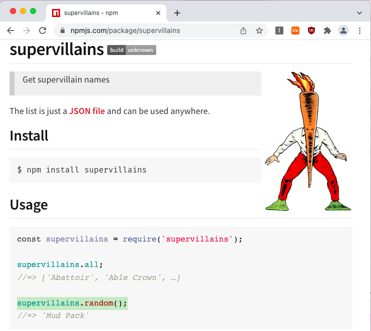
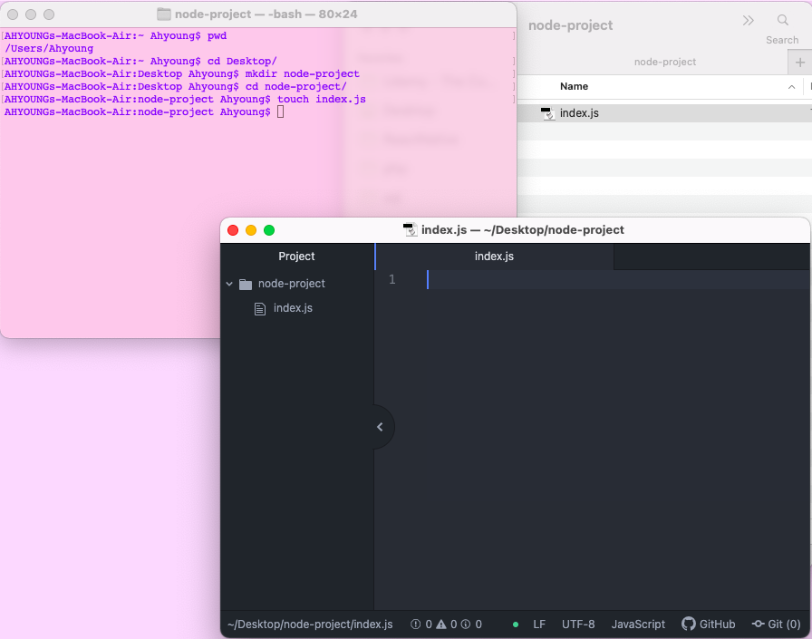
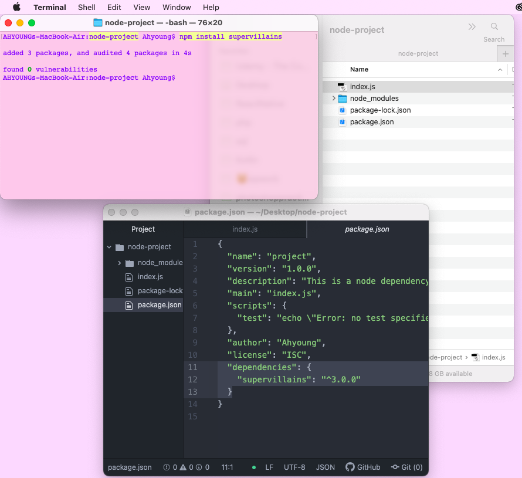
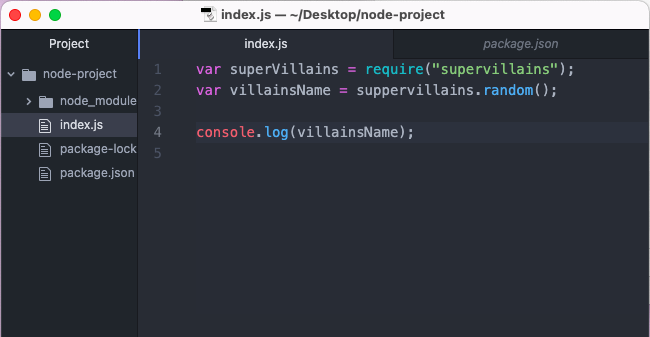
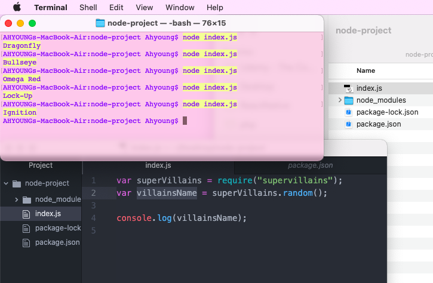

Node.js프로젝트 목록입니다.
각 버튼을 눌러확인하세요.
npm dependency
Node package manager
npm의 dependency기능을 활용하여 외부에서 필요한 자료를 다운받아 원하는 결과값을 index.js가 실행되면서 불러오도록 간단히 만들어보았습니다.

사용할 npm은 supervillains입니다. supervillains.random(); 를 이용하여 콘솔창에 값을 불러오도록 해보겠습니다.

먼저 mkdir을 통하여 원하는 위치에 폴더를 만들어주고 나서 touch index.js명령어를 통하여 실행이 시작되는 파일 index.js를 만들어 줍니다.

이어서 명령어 npm init을 통하여 노드 패키지 매니저를 만들어줍니다. 그리고 차례대로 터미널에서 쏟아져 나오는 항목들에 추가하고싶은 정보를 입력합니다. 저는 기본세팅값에 description과 author부분에 정보를 추가로 적었습니다. 그러고 나서 설치가 완료되면 오른쪽 IDE창에 설치된 내용들이 뜬 것을 확인할 수 있습니다.

만들어진 npm파일에 이제 인터넷에서 자료를 끌어올 수 있도록 의존할 파일 npm dependencies를 설치하겠습니다. 명령어 npm install supervillains을 통해 데이터불러오기가 완료되면 이번에도 IDE의창에 dependencies키값안에 supervillains키값과 value값이 value값으로 추가된 것을 확인할 수 있습니다.

dependency자료를 불러오기위해 require("supervillains");를 변수값에 저장하여 .random();을 이용하여 콘솔창에 실행될때마다 랜덤으로 값이 입력되도록 코드를 작성하였습니다.

터미널에 node index.js명령어를 입력하여 파일을 실행할때마다 supervillains이름들이 랜덤으로 입력되는것을 확인할 수 있습니다.